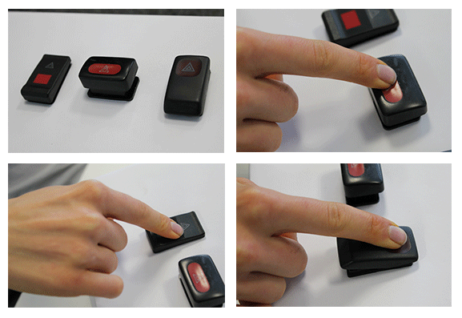
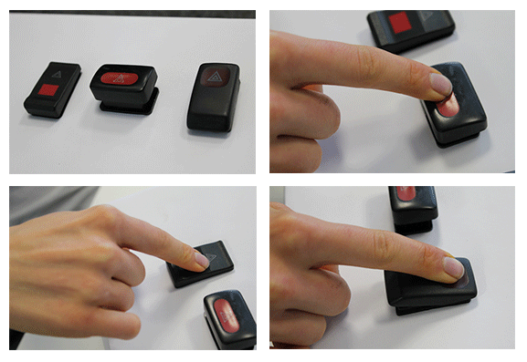
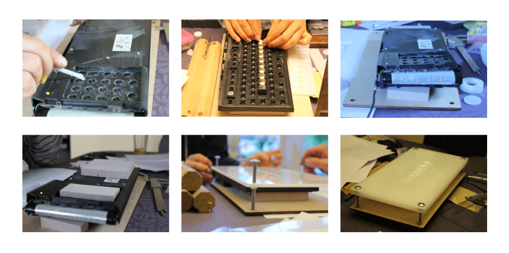
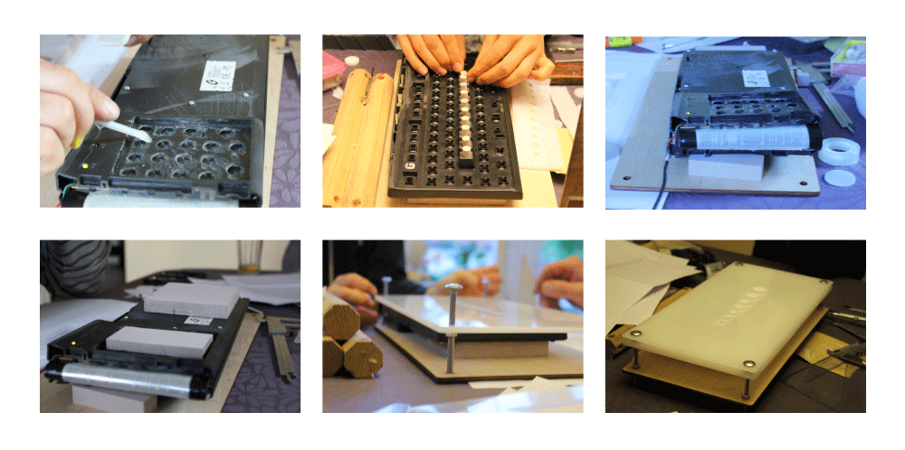
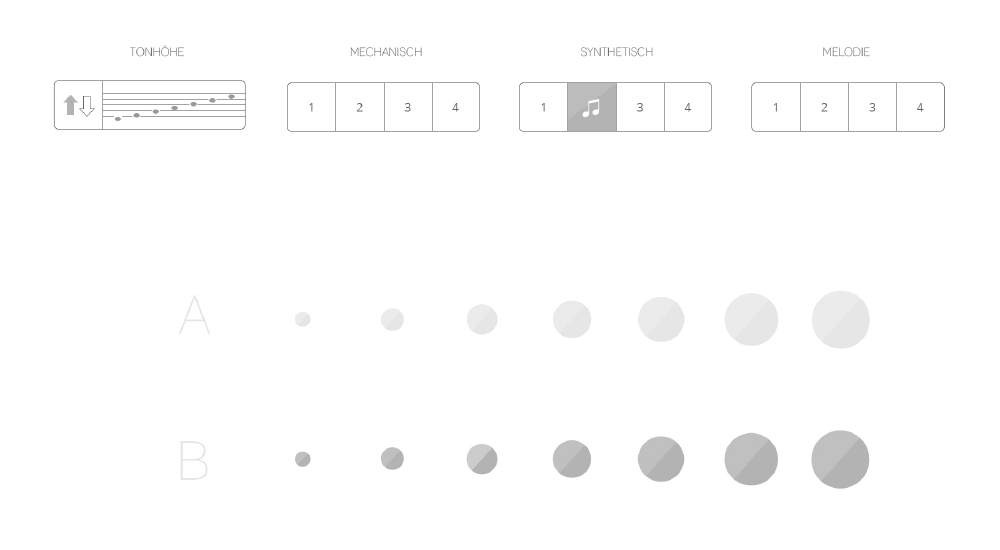

Master Button
3.Semester, teamwork


Description
The technology advancement in the current modern world magnifies the issue where the human visual is limited. The virtual key can possibly aid in virtual design, but still unable to provide users the realistic sense of feeling that an actual key is able to provide. This represents that the human sensor organs are not fully utilised. The virtual keys also signifies the importance of sensing design.
Research & Analysis
We analysed a large amount of key designs, and concluded the few main aspects that are crucial in designing keys, such as the material, colour, shape, size, icons, type of press and sound produced by pressing. The three different buttons shown in the graph below have some differences in size, material and pressing type respectively. In questionnaire, we were mainly observing the most desirable button touched by the visitors as well as the touching position and the most comfortable button, etc.
 

The result of survey has indicated that the sound feedback from buttons was the key factor to evaluate the quality of buttons. Hence we decided to design an experiment upon sound feedback. Furthermore, apart from design factors of button itself, gender and age of the testers would also generate large differences in results.
Concept
The final design schema consists of two parts, two rows of virtual buttons, one row of realistic button. Their size, distances from each other and colour remains consistent. We provide totally three main categories of button sound from mechanics, tunes and normal PC. Each category contains four different sound as options. In default situation, the smaller the button, the smaller the sound produced. Besides, in addition to change different button sound, users could also shift the sequence of the sound magnitude. The figure below is the design process of the realistic button and the virtual button realized by VVVV.
 

Screen

Code - VVVV

Final
Directions: All three rows of buttons remains consistent in size, colour, distance and sound feedback. There is no visual feedback in group A and group C, no sense of touch feedback in group A and some colour darker in group B.